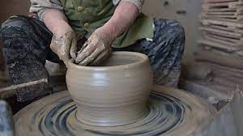

For ceramics we provide further processing to estimate horizontal cross-sections (profile-lines) for printed documentation, as it is done by manual drawing
Ceramic art is art made from ceramic materials, including clay. It may take forms including artistic pottery, including tableware, tiles, figurines and other sculpture. As one of the plastic arts, ceramic art is one of the visual arts. While some ceramics are considered fine art, such as pottery or sculpture, most are considered to be decorative, industrial or applied art objects
We draw pictures and make great ceramics that are intrested by everyone.Nevertheless, despite such exceptions, ceramics generally display the properties of hardness, refractoriness (high melting point), low conductivity
Our Drawings are created by our artist using instruments to create lines on paper or another two-dimensional surface. Common drawing instruments include pencils, chalk, charcoal, pen and ink, colored pencils, crayons, pastels, inked brushes, erasers, markers, styluses, and even metals
We also do other forms of ART like Painting, sculpture,Literature and Architecture etc.
Style is basically the manner in which the artist portrays his or her subject matter and how the artist expresses his or her vision. Style is determined by the characteristics that describe the artwork, such as the way the artist employs form, color, and composition, to name just a few.
Ceramic products are hard, porous, and brittle. As a result, they are used to make pottery, bricks, tiles, cements, and glass. Ceramics are also used at many places in gas turbine engines. Bio-ceramics are used as dental implants and synthetic bones
homepage
page1
page2
page3